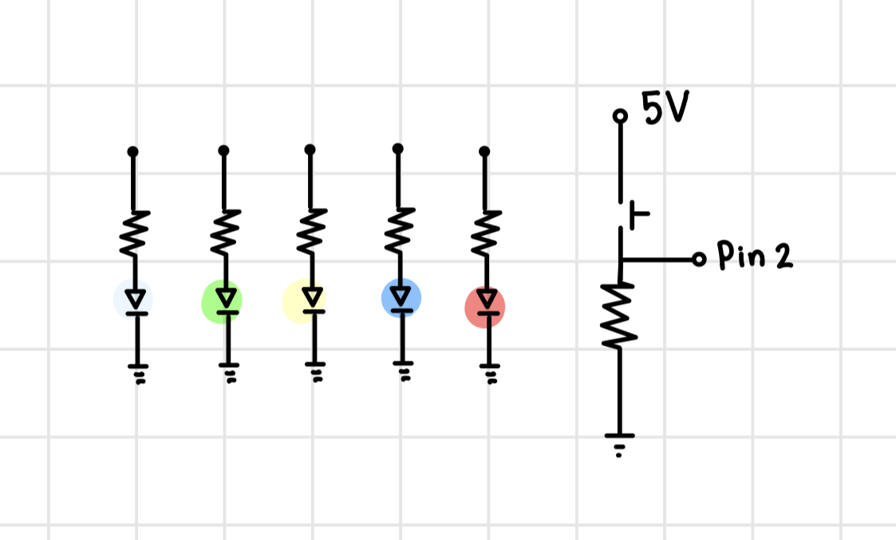
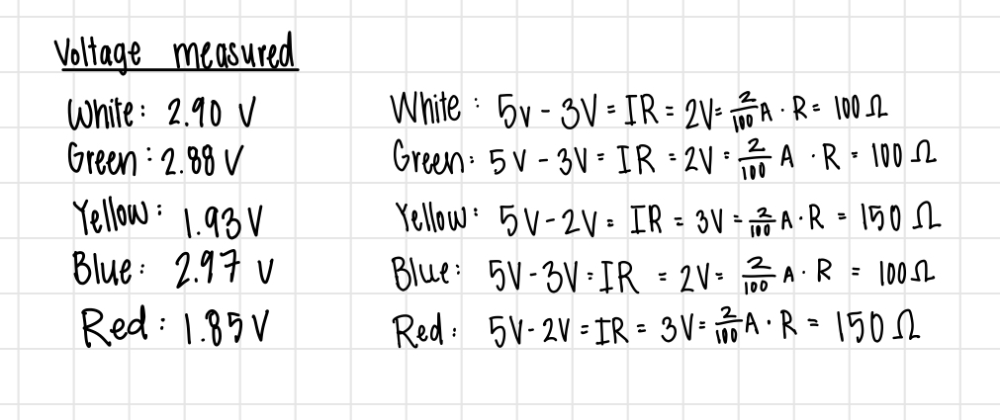
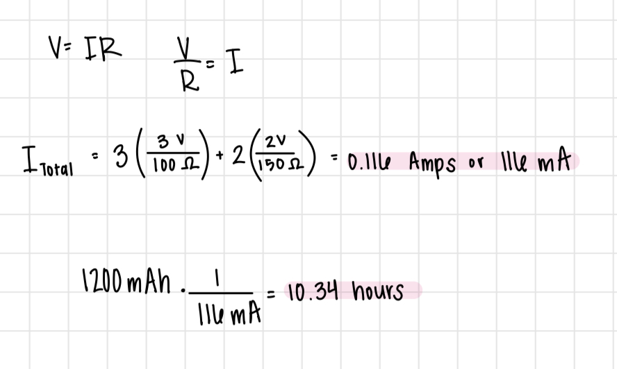

For this assignment, we were tasked with creating a circuit containing 3+
LEDs and a button, where at least one of the LEDs fades.
Since for this project we are tasked with creating a prototype for a new light up toy,
I chose to create a circuit with one of each color LED: white, green, yellow, blue, and red.
When the button is pressed, one of the colored LEDs is randomly selected to light up and
then fade out. This would be a toy for younger children where they would have to identify the
color that lights up.

This is an image of my final circuit built on a breadboard and connected to the Arduino.
All 5 LEDs are in parallel branches, and each have their own resistor,
They are connected to the digital PWM pins 3, 5, 6, 9, and 10 on the Arduino.
The button is connected to digital pin 2.

Here is the schematic diagram for my circuit. Since I was using 5 different colored LEDs, I
created a parallel circuit with 5 branches. Each branch contains one LED and one resistor.
By using a parallel circuit, I ensured voltage could split and was constant across each LED.
This also allowed me to control each LED independently. The button is also its own branch in parallel to the LEDs.

To choose the right resistors for each branch, I started by measuring the voltage drop through each LED.
Each LED had a voltage drop between 1.8 and 3.0 volts, so I rounded up to either 2.0 or 3.0 volts for each LED.
I knew the arduino provided 5 volts of power and I wanted a current of 20 mA.
Then I used Ohm's Law (V = IR) to calculate the resistance needed. The result was a 100 or 150 ohm resistor for each branch.
To ensure that my the current would be 20mA or lower, I rounded up, using a 220 ohm resistorvfor each LED branch.
I used a 10k ohm resistor to act as a pull-down resistor on the button branch,
as recommended in class. The purpose of a pull-down resistor is to ensure that the
input pin reads LOW when the button is not pressed. When the button is not pressed, Pin 2 might pick-up additional noise from the environemnt causing it
to read a non-zero voltage. Adding a resistor that connects Pin 2 to Ground, ensures the pin will read zero.
I used a 10k ohm because it limits the amount of current flowing through the circuit while still
effectively pulling the pin to ground.
Final Circuit GIF

Here is a GIF of the final circuit. Every time you press the button.
The circuit randomly selects one of the 5 colored LEDs to light up and then fade out.
Additional Questions
1. Draw a chart where the X axis is time and the Y axis is voltage.
Draw 3 lines representing the voltage across an LED with analogWrite(led, 64),
analogWrite(led, 128), and analogWrite(led, 255).

This chart represents the duty cycle of the LED at different analogWrite values.
This chart show the voltage overtime for a blue LED.
2. If all your LEDs were on simultaneously, what would the total current draw be?
Is this above or below the total Arduino current draw limits?
If all your LEDs were on, how long would your circuit run if powered by a 1200 mAh battery

The total current draw would be 116 milliAmps. This is below the total Arduino current draw
limit of 150 milliAmps total.
If powered by a 1200 mAh battery, the circuit would run for approximately 10.34 hours.
3. Measure and record the actual voltage across one of your LEDs when it's on.
How does this compare to the theoretical forward voltage for your LED color?
I measured the voltage across the red LED when it was on and it was 1.85 volts.
This is close to the theoretical forward voltage of 2.0 volts for a red LED, but not exactly.
4. AI Use
I did not use AI when completing this assignment.
Arduino Code
const int buttonPin = 2; // the number of the pushbutton pin
long randNumber; //initalize ability to run random number generator
int white = 3; // intialize white LED
int green = 5; // intialize green LED
int yellow = 6; // intialize yellow LED
int blue = 9; // intialize blue LED
int red = 10; // intialize red LED
int pwmPins[] = {3, 5, 6, 9, 10}; // intialized an array of all the PWM pins used by an LED
int randomNum = 0; //intialized the random number as 0
int brightness = 250; //intialized the birghtness as 250
int fadeAmount = 5; // intialized how many points to fade the LED by to 5
int buttonState = 0; // initalized the variable for reading the pushbutton status
int lastButtonState = 0; // initalized thevariable for the previous pushbutton status
void setup() {
pinMode(white, OUTPUT); //set white LED as an output
pinMode(green, OUTPUT); //set green LED as an outputv]
pinMode(yellow, OUTPUT); //set yellow LED as an output
pinMode(blue, OUTPUT); //set blue LED as an output
pinMode(red, OUTPUT); //set red LED as an output
Serial.begin(9600); //intialized serial to debug
randomSeed(analogRead(0)); // intializing ability to pick random numbers
}
void loop() {
buttonState = digitalRead(buttonPin); // read the state of the pushbutton value:
Serial.println(brightness); //print the brightness value
if (buttonState == HIGH && lastButtonState== LOW) { //check if the button has been pressed and was previously not pressed
randNumber = pwmPins[random(0,5)]; //generate a random number/pin from the pwmPins array
brightness = 250; //set the brightness to 250
while (brightness > 0){ // check if the brightness is greater than zero
//Serial.println(brightness); //print the brightness value
analogWrite(randNumber, brightness); //make that random pin light up at full brightness
brightness = brightness - fadeAmount; //decrease the brightness by the fade amount
delay(50); // wait 50 milliseconds as LED dims
}
analogWrite(randNumber, LOW); // guarantee the random LED turns off
}
Serial.println(randNumber); //print the random number
lastButtonState = buttonState; //update the state of lastbuttonstate to be the current buttonState
}